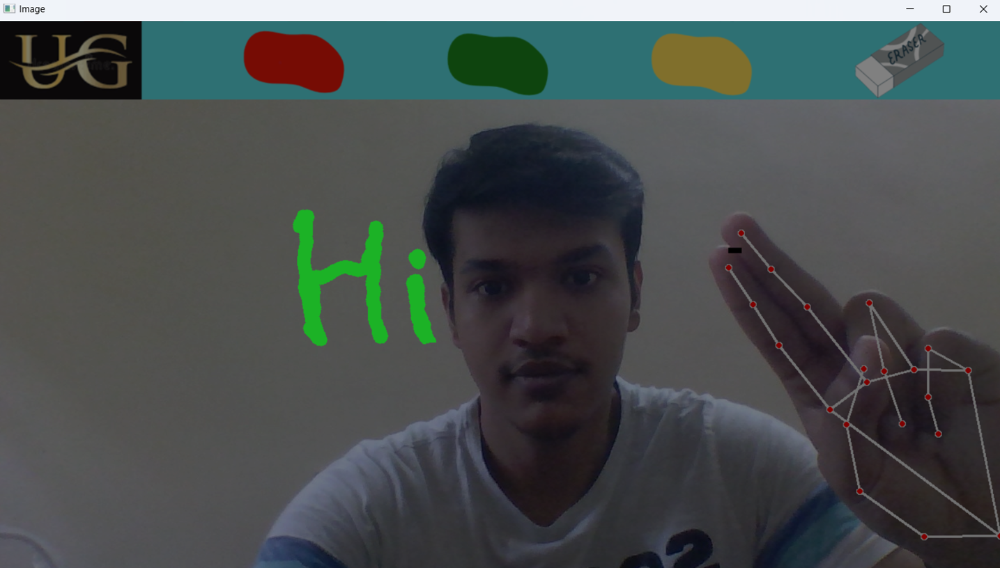

Welcome to the AI Whiteboard project! This project demonstrates hand-tracking and drawing capabilities using OpenCV and MediaPipe in Python. Explore the features, see examples, and learn how to use the tool below.
To run the project, ensure you have Python installed along with the necessary libraries. Follow the instructions in the README file in the GitHub repository.
Visit the GitHub Repository for more details and to access the source code.